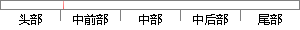

将异常模式下的SPSR值复制到CPSR中，使得原来的CPSR的状态从相应的SPSR中恢复，回到被中断前的工作状态。
片段位置图

相似结果
相似片段：当程序的运行进入异常模式时,可以将需要保护的寄存器...CPSR的当前值,从异常退出时则可由SPSR来恢复CPSR。...将寄存器cpsr的内容复制到spsr_svc,即内核态的spsr...
| 标题 | 《基于ARM的嵌入式系统研究及USB驱动程序设计》 |
| 对比库 | 中国学位论文全文数据库 |
| 作者 | 李继伟 |
| 机构 | 西安电子科技大学 |
| 分类 | 计算机应用 |
| 年份 | 2005 |
| 相似率 | 60.98% （轻度抄袭） |
※ 片段修改建议 ※
近似词参考：- 原来：本来
- 恢复：规复
- 状态：状况
- 异常：非常 异样
- 工作：事情
- 相应：响应
- 中断：间断 中止 停止
系统自动生成语句： 将非常模式下的SPSR值复制到CPSR中，使得本来的CPSR的状况从响应的SPSR中规复，回到被间断前的事情状况。
注：本片段修改建议为系统自动生成，仅供参考。